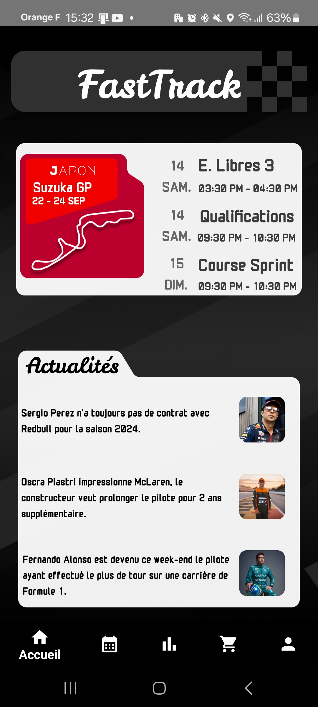
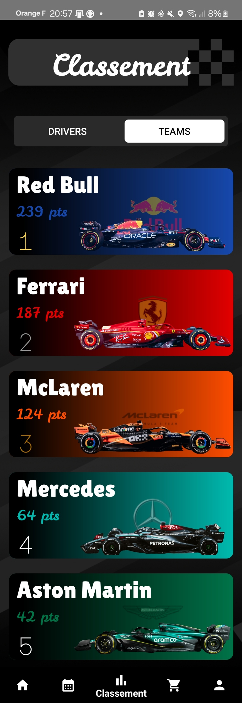
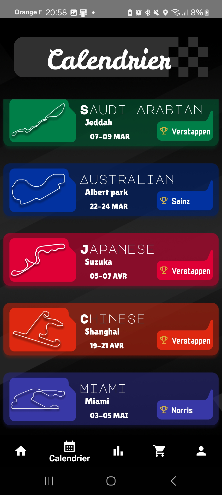
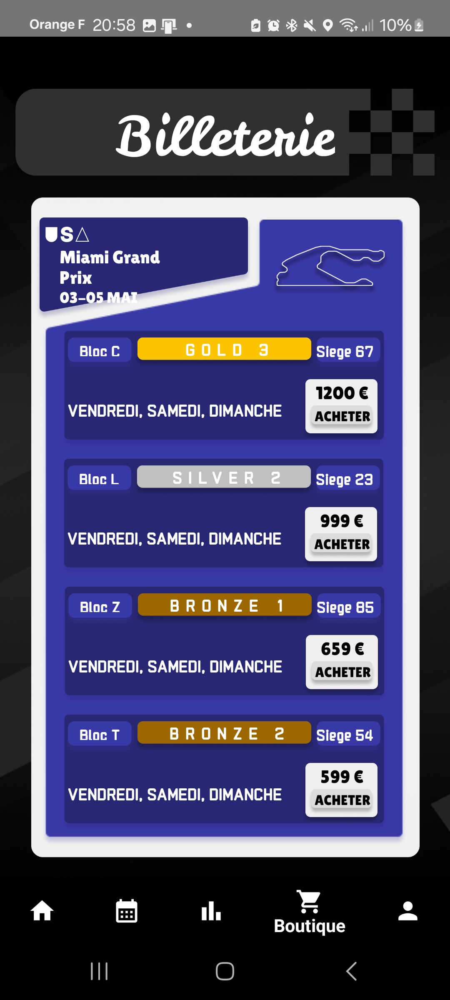

FastTrack
- Tech Stack: Kotlin , MVVM , Retrofit , Room , LiveData , Coroutines
- Github URL: Project Link
- APK: Download
This project was carried out as part of the advanced programming course at the IUT Informatique in Bourg-en-Bresse.
The aim of this project is to create an information application for Formula 1 fans. The aim is to make it possible to consult race results and driver and team rankings.
Features:
- Display of next race
- Calendar display
- Driver rankings display
- Team rankings display
Game Screenshots



